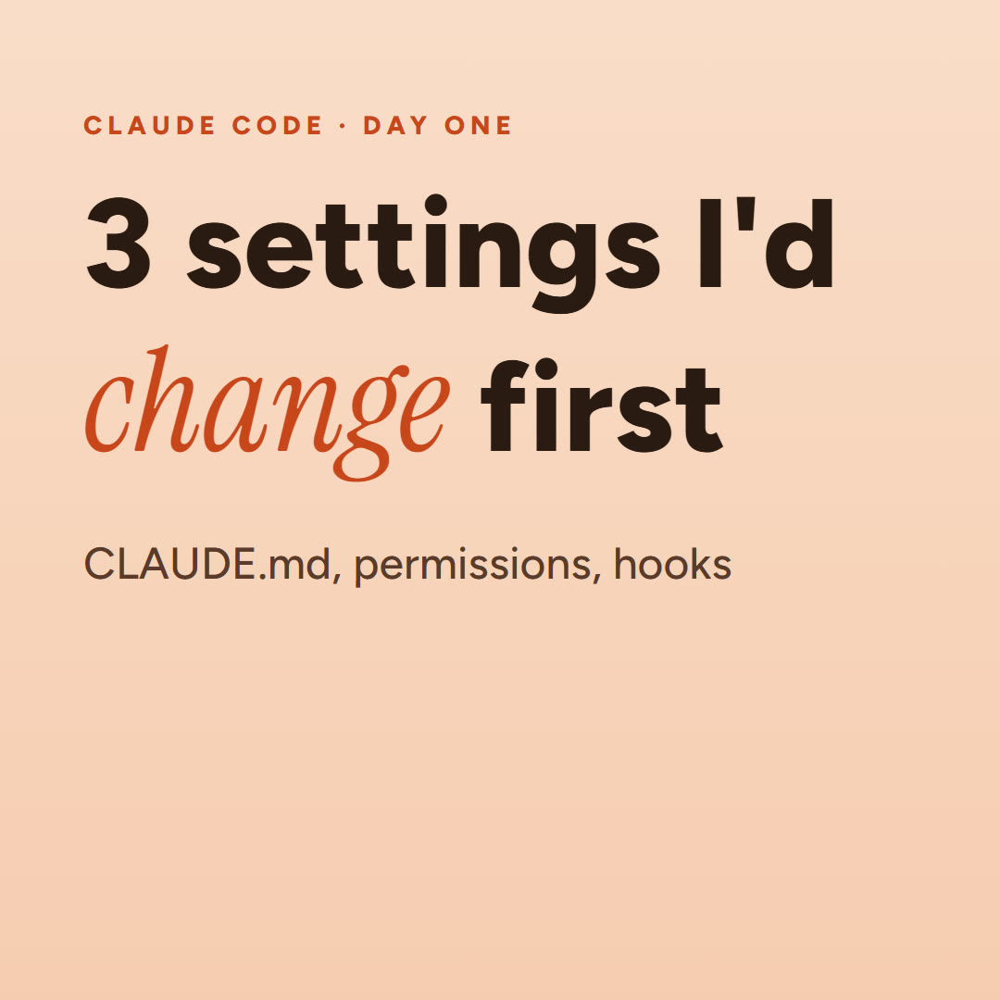

Claude Code: 3 settings for day one
Copy-paste versions of the three settings from the reel: a CLAUDE.md, permission rules and a format hook. For anyone starting with Claude Code on a real project.

Quick start
- In your project, start Claude Code and type
/initto write a starting CLAUDE.md. - Paste the permissions block below into
.claude/settings.jsonin your project root. - Add the Prettier hook to the same file, then run
/statusand/hooksto check they loaded.
Why these three
Each Claude Code session begins with a fresh context window. A CLAUDE.md is read at the start of every session, so your project, commands and rules come with you. Claude treats CLAUDE.md as context, not enforced configuration. Permission rules and hooks are different: Claude Code itself applies them, whatever the model decides.
Before you start
- Claude Code installed, and a project folder you can open it in.
- Settings files are strict JSON: a
//comment or a trailing comma is a syntax error. - Where a setting goes decides who it applies to:
~/.claude/settings.json: you, in every project on this machine..claude/settings.json: everyone working in the project. Commit it so teammates get it..claude/settings.local.json: you, in this one project only.
- The hook in setting 3 needs
jqand Prettier (it runsnpx prettier).
Setting 1: a CLAUDE.md
- Open your project and start Claude Code.
- Type
/init. Claude analyzes your codebase and creates a CLAUDE.md with build commands, test instructions and the conventions it finds. If one already exists,/initsuggests improvements instead of overwriting it. - Read it and add what Claude would not find on its own: the commands you always run, the folders that matter, the "always do X" rules.
- Keep it under 200 lines. Longer files use more context and are followed less closely.
- Commit it as
./CLAUDE.md(or./.claude/CLAUDE.md) so your team shares it.
A small starting point you can adapt (replace the commands with your own):
```
Project notes for Claude
- Build: npm run build
- Test: npm test (run it before every commit)
- Lint: npm run lint
- Use 2-space indentation
- API handlers live in src/api/handlers/
```
Setting 2: permissions in settings.json
- Create
.claude/settings.jsonin your project root (or open it if it exists). - Paste this in. It lets Claude Code run your lint and test scripts without asking, and stops it reading
.envfiles. - Save, then run
/statusinside Claude Code to confirm the file loaded./permissionslists every rule and the file it came from.
```
{
"permissions": {
"allow": [
"Bash(npm run lint)",
"Bash(npm run test *)"
],
"deny": [
"Read(./.env)",
"Read(./.env.*)"
]
}
}
```
Rules are checked in order: deny, then ask, then allow. Deny rules block in every permission mode.
Setting 3: a hook that formats every edit
- Add this
hooksblock to.claude/settings.jsonin your project root. If the file already has permissions, put"hooks"next to"permissions"inside the same outer braces. - It runs Prettier on every file Claude edits or writes, after the edit.
- Type
/hooksto see it listed. When it works, Claude Code shows nothing: the edited file is just formatted.
```
{
"hooks": {
"PostToolUse": [
{
"matcher": "Edit|Write",
"hooks": [
{
"type": "command",
"command": "jq -r '.tool_input.file_path' | xargs npx prettier --write"
}
]
}
]
}
}
```
Settings 2 and 3 in one file
Your whole .claude/settings.json with both, ready to paste:
```
{
"permissions": {
"allow": [
"Bash(npm run lint)",
"Bash(npm run test *)"
],
"deny": [
"Read(./.env)",
"Read(./.env.*)"
]
},
"hooks": {
"PostToolUse": [
{
"matcher": "Edit|Write",
"hooks": [
{
"type": "command",
"command": "jq -r '.tool_input.file_path' | xargs npx prettier --write"
}
]
}
]
}
}
```
Try these
- Allow another script you run often: add
"Bash(npm run [script] *)"toallow. - Block a secrets folder too: add
"Read(./secrets/**)"todeny. - Ask before every push: add
"ask": ["Bash(git push *)"]next toallowanddeny.
Gotchas
- Claude follows CLAUDE.md as guidance, not as a rule it cannot break. Anything that must never happen belongs in a deny rule or a hook.
- A
Read(./.env)rule covers the file tools and commands that name the file, such ascat .env. It does not stop every command that could read it, for examplegrep -rover the folder. The official settings examples cover how the sandbox closes that gap. - On recent versions (v2.1.283 or later) Claude Code starts in auto mode, so you may see fewer prompts already. Allow and deny rules still apply in every mode.